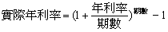

實際年利率及年利率轉換
程式編寫日期: 2006年7月9日
第一個程式: 14步 (儲存於P1，用作計算實際年利率)
| 1 | + | A 2 | ÷ | B 4 |
| ÷ | 2 | 10x | = | xy |
| Kout 2 | - | 1 | % | MODE . |
第二個程式: 12步 (儲存於P2，用作計算年利率)
| 1 | × | A 2 | % | + |
| x1/y | B 4 | - | 1 | % |
| × | Kout 2 | = | MODE . |
參考公式:

例題1: 實際年利率 10%，利息每月結算，求年利率。
按 P1 10 RUN (實際年利率) 12 RUN (每月結算，一年共有12期，顯示答案為 9.57%)
例題2: 年利率 8%，利息每月結算，求實際年利率。
按 SHIFT P2 8 RUN (年利率) 12 RUN (每月結算，一年共有12期，顯示答案為 8.30%)